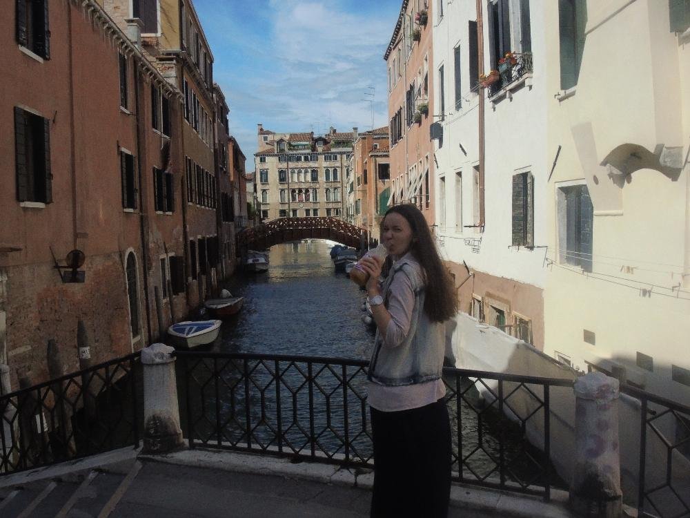
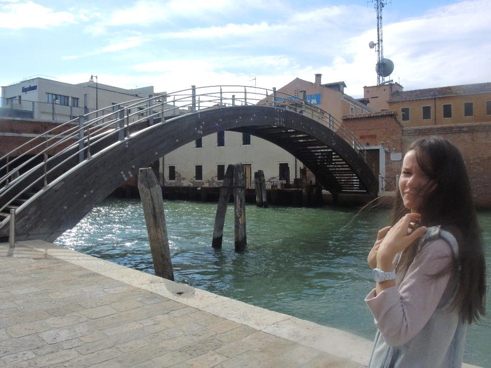
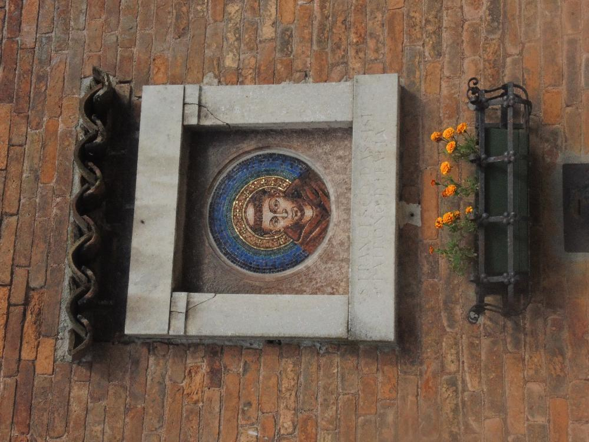
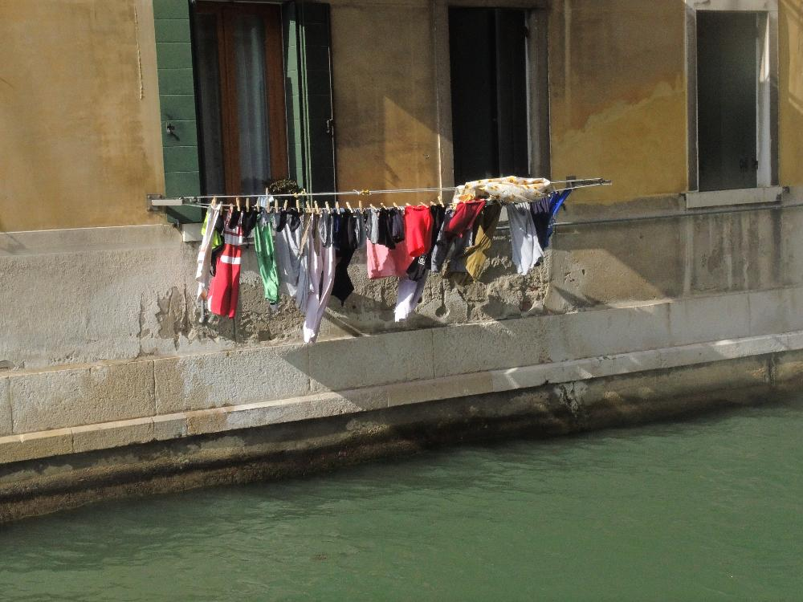
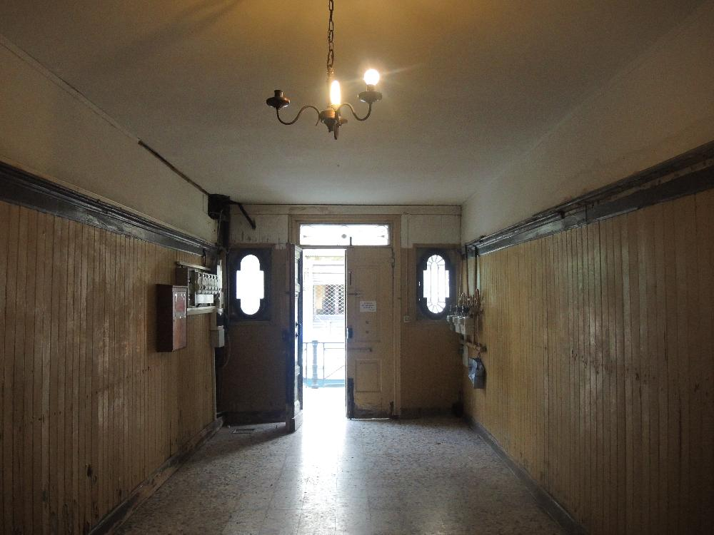
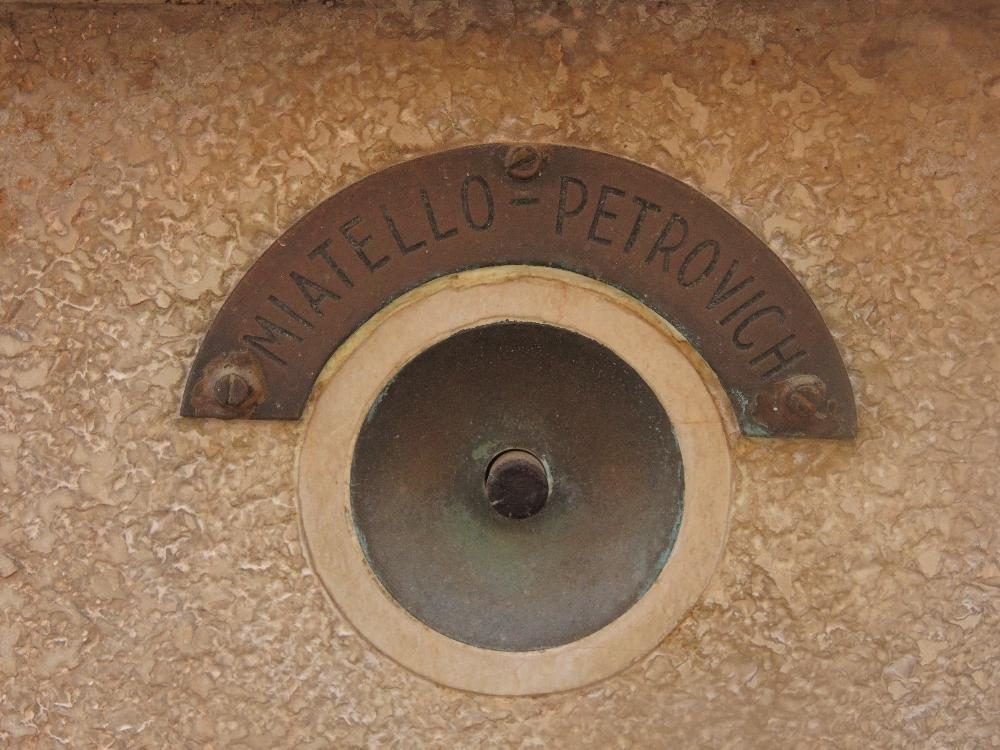
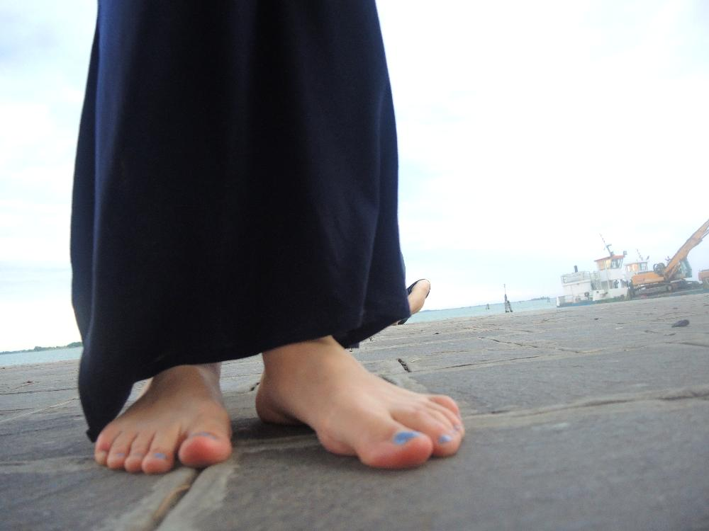
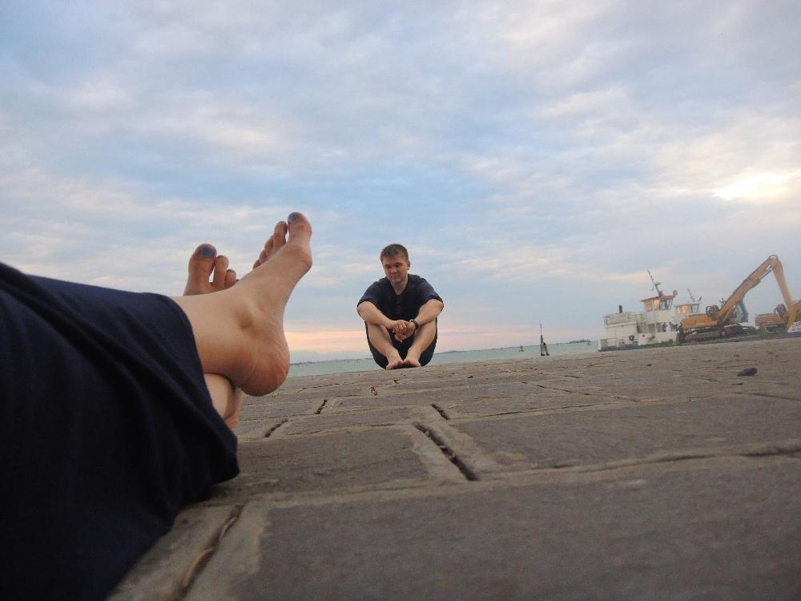
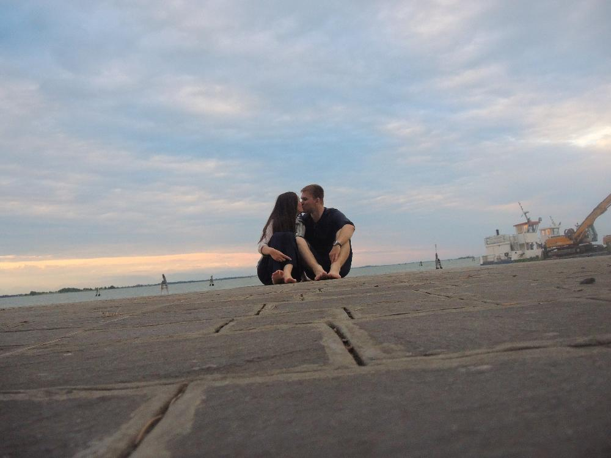
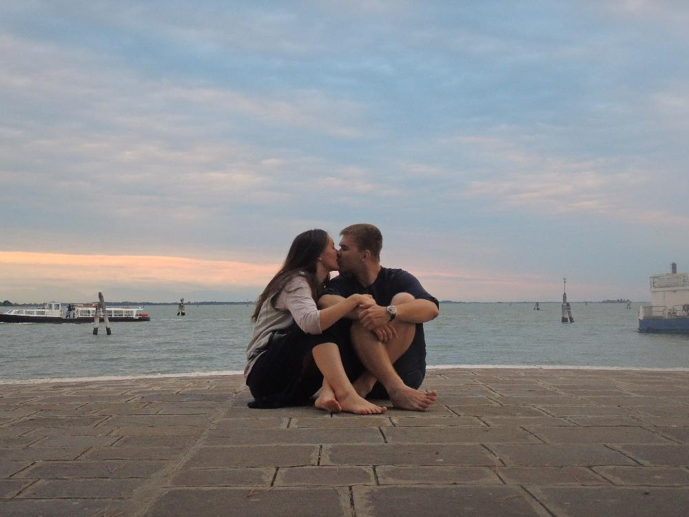

16.06.2014
Первый день он сонный, медлительный, хотящий спать и непонимамающий географически - где ты?
Мы готовились преодолевать трудности, но Венеция лишь ласково отваряла нам врата, и как-то сама решала все обычные туристические проблемы...
Все фотографии выложены как есть. Смотреть только при быстром интернете. Большой трафик.
Фотографии кликабельны, нажмите чтобы увеличить

-Попью сока, попялюсь на канал
-Наташ

Здесь нет похожих мостов, все они немного сумасшедшие. Как гласит история в Венеции сначала строили улицы, а уже потом как придется возводили мосты.
Статуи сохраняют очень древний облик. Российские статуи такие все ухоженные или сделанные заново.

Очень много всяких религиозных штуковин на домах: картин, статуэток и всякой другой

Проезжая мимо на гондоле можно стырить себе высушенные труселя

Венецианский подъезд

Везде свои люди

Успей подойти к фотику до таймера

Пристрелка


Результат пристелки и таймера
Пицце-пасто-винно-вечернее заседание
Любимая нашла ручную фокусировку
{kind=link}